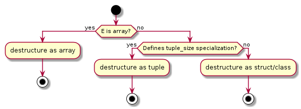

Structured Bindings
Table of Contents
- 1. What are structured bindings
- 2. Names for stuff
- 3. Example 1 - destructuring an array
- 4. Example 2 - binding to data members of a struct
- 5. Example 3 - destructuring a tuple
- 6. It’s C++ - things are not that simple
- 7. Example 4 - binding to evaluation results
- 8. Key takeaways
- 9. Example 5 -
std::array??!! - 10. How is the destructuring algorithm chosen?
- 11. Adding tuple-like interface for custom types
- 12. Example 6 - binding for user-defined type
- 13. Example 6 - continued
1 What are structured bindings
auto [x_1, /*...*/, x_n] = expression;
Structured bindings are a way of accessing and conveniently referencing components of a larger entity, something that has an internal structure - hence the structured part. In C++, those larger entities are arrays, structs/classes or tuples. Instead of going through detailed, dry definitions, let’s look at some examples. But first let’s name the parts involved in creating a structured bindings.
2 Names for stuff
cv-auto ref-spec [identifier-list] = expression; using E = decltype(expression);
- structured bindings - the name of the feature in C++
- destructuring - general name for accessing the components of a structured entity
cv-autois the mandatoryautokeyword, possibly qualified withconst, but curiously not withvolatile(since C++20). It can also be qualified with storage duration specifier -staticorthread_local,ref-speccan be either nothing, an l-value reference (&), or an r-value reference (&&),identifier-listis a list of identifiers that get introduced into the surrounding context by the structuded binding declaration,expressionis the expression we’re binding to,Eis the type of theexpression.
3 Example 1 - destructuring an array
int arr[2] = { /*init*/ }; auto& [x_0, x_1] = arr; // eqivalent to int& x_0 = arr[0]; int& x_1 = arr[1];
If you have a built-in array of any type, you can destructure it’s elements into named variables. The number of elements in the identifier list has to match the number of elements of the array.
4 Example 2 - binding to data members of a struct
struct S { int m_1; float m_2; double m_3; }; auto s = S{/*init*/}; const auto& [x, y, z] = s; // equivalent to const int& x = s.m_1; const float& = s.m_2; const double& = s.m_3;
When destructuring an instance of a struct or a class, you need to be able to access all the data members. If you attempt to destructure an object of a class with private members, your program fails to compile. Your identifier list has to have the same number of elements as the number of data members of the struct/class you’re destructuring.
5 Example 3 - destructuring a tuple
std::tuple<std::size_t, char> t{/*init*/}; const auto [v1, v2] = t; // equivalent to const std::size_t v1 = std::get<0>(t); const char v2 = std::get<1>(t);
Destructuring tuple is similiar to destructuring a struct, but the compiler goes through library-defined get function, not the internal compiler magic, to retrieve the values.
6 It’s C++ - things are not that simple
std::tuple<std::size_t, char> t{/*init*/}; const auto& [v1, v2] = t; EXPECT_TRUE(std::is_reference_v<decltype(v1)>); // FAIL!!!
Type of v1 is actually const std::size_t!
The way of thinking we’ve introduced in the previous examples is useful, but simplified. As C++ programmers, we should be able to operate on a simplified mental model of the language just to get things done. At the same time, we need to also be aware of the nuances that may come up in corner cases or in performace critical parts. In this case, the situation is a bit nuanced because in a non-garbage-collected languages we need to concider the lifetimes of the temporaries that may be created when evaluating the expression we’re binding to.
7 Example 4 - binding to evaluation results
Vector2D a = {/*init*/}; Vector2D b = {/*init*/}; auto&& [c1, c2] = a + b;
The result of a + b has to ’live’ somewhere.
We omit the detailed definition of the Vector2D class, but hopefully everyone
can imagine what it looks like and specifically how a sane definition of an
operator+ would look in this case. The result of evaluating a + b is a
temporary object that will be destroyed at semicolon ending the last line -
unless it gets captured in some variable. For precisely such case, the
structuded binding declaration introduces an implicitly defined, not directly
accessible variable - let’s call it e for short. This variable is then
initialized by the expression in the structuded binding and the cv-auto and
ref-spec parts actually refer to that variable, not to the identifiers on the
list. The identifiers are then bound to the relevant parts of e by internal
compiler magic. That’s why they’re not explicitly reference types.
8 Key takeaways
- You may already have seen this - e.g. in Python; the concept is not C++ specific.
- You can destructure native arrays, tuple-like types, and structs
- The number of elements in the destructured entity needs to be known at compile time.
- The number of identifiers has to exactly match the number of structural components.
- The identifiers have to be unique and there is no special ignore identifier (like ’_’ in Python).
9 Example 5 - std::array ??!!
So how does this work?
std::array<double, 3> a = {1.0, 2.71, 3.14}; const auto& [one, e, pi] = a;
This code somehow works. The std::array is a regular class, not some compiler
intrinsic type, so there may be a generic mechanism that allows us to teach the
compiler on how to destructure our own types also.
10 How is the destructuring algorithm chosen?

There are three distinct ways the compiler can destructure an expression for us.
If the type is a native array, then destructuring means binding to the elements
of the array in sequence. If it is not an array, then the compiler checks if a
template specialization of std::tuple_size is defined for our type. If it is
not, then compiler tries to destructure it by accessing data members. If the
std::tuple_size template is specialized for our type though, then compiler
starts to further look for the elements it needs to create a binding. Let’s now
look at what those elements are.
11 Adding tuple-like interface for custom types
When E is a user defined type, the following need to exist:
std::tuple_size<E>::valuestd::tuple_element<i, E>::type- either a
E::get<i>()or standaloneget<i>(/*const*/ E /*&*/)
The tuple_size::value denotes the number of elements to destructure in our type.
The tuple_element<...>::type provides information about what type is each of the structural elements.
Finally, the get functions are used to obtain the values of each element. Note, that if the standalone get is to be used, it needs to be defined in the same namespace as E, otherwise the compiler will not be able to find it.
12 Example 6 - binding for user-defined type
namespace experiment { class Vector2D { double x; double y; public: template<std::size_t idx> double get(); }; }
13 Example 6 - continued
namespace std { template<> class tuple_size<experiment::Vector2D> : public std::integral_constant<std::size_t, 2> {}; template<std::size_t idx> class tuple_element<idx, experiment::Vector2D> { using type = double; } }